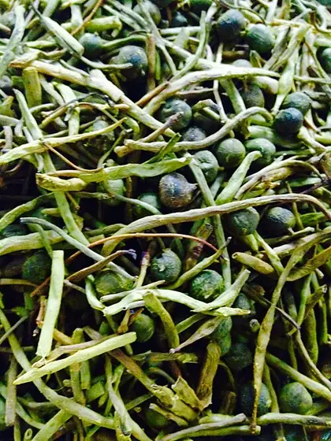

Main course · Popular in Thar and dry northwest
Ker sangri
Ker sangri is made with wild ker, khejri (sangri), a favourite in Thar and dry northwest.

How do you make ker sangri?
Dried ker berries and sangri beans soaked, boiled and cooked with yoghurt, red chilli and amchur.
Wild ingredients
- Ker (Capparis decidua): in season April to June
- Khejri (sangri) (Prosopis cineraria): in season March to May
Watch the recipe

Video: NishaMadhulika on YouTube